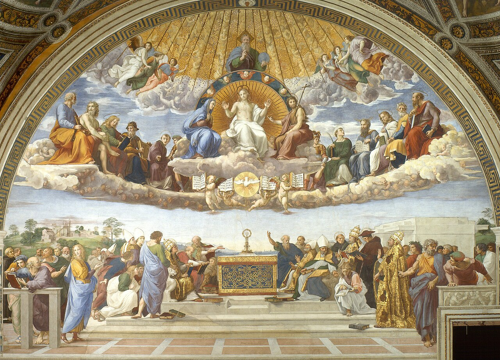
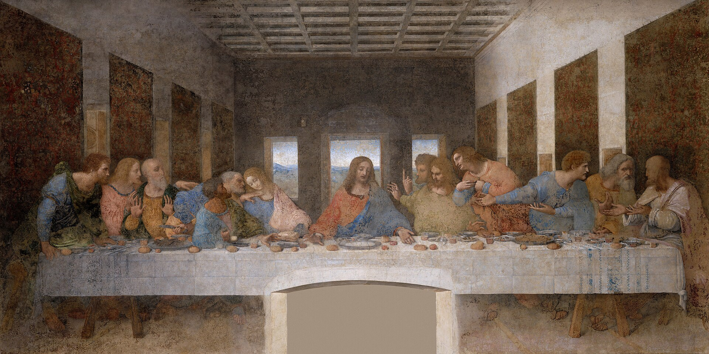

Understand the faith
Build a path through Catechism, Scripture, councils, and tradition.
Catholic teaching, prayer, and community
A source-grounded Catholic companion for learning the faith, praying with the Church, and walking with other Catholics.
Clickable MVP
A tighter first release: daily formation, cited answers, curated library paths, traditional prayer flows, and moderated community.
Onboarding
Build a path through Catechism, Scripture, councils, and tradition.
Rosary, Divine Mercy, novenas, Latin prayers, and prayer reminders.
Answers are grounded in approved Catholic documents and clearly cited.
Join prayer intentions, parish circles, and moderated study groups.
What do you want The Ordinary Catholic to help you do first?
Today
Doctor of the Church and witness to reform, prayer, and courageous charity.
Linked path: Catechism, Vatican II, Trent, Aquinas, and devotional practice.
Seasonal Marian prayer with English and Latin options.
Ask
The sacrament includes contrition, confession, absolution, and satisfaction. The app shows the answer beside original sources instead of hiding them.
Answer Detail
Catholics confess to a priest because Christ entrusted the ministry of reconciliation to the apostles and their successors. The priest acts as a minister of Christ and the Church, not as a private spiritual adviser.
Library
Scripture, Catechism, councils, fathers, and common objections.
Encyclicals, apostolic letters, councils, and papal teachings.
Patristic texts, Summa references, and historical notes.
Topic Detail
A guided topic page would combine doctrine, Scripture, Church documents, saints, common questions, and devotional practice.
CCC 1322-1419: the sacrament of the Eucharist.
John 6, Luke 22, 1 Corinthians 10-11.
Fathers, saints, councils, and Aquinas.
Pray
Fruit of the mystery: humility. Begin with the Our Father, then pray ten Hail Marys while meditating on the angel's greeting.
The angel Gabriel announces that Mary will bear the Son of God. Meditate on humility, obedience, and trust.
Hail Mary, full of grace, the Lord is with thee. Blessed art thou among women, and blessed is the fruit of thy womb, Jesus.
Community
Prayer Intention
Ask
The assistant answers from Catholic sources and separates official teaching, Scripture, Tradition, saints, and historical commentary.
The Church teaches that those who die in God's grace but still need purification undergo purification before entering the joy of heaven.
Library

Study Path
Scripture, Catechism, Trent, Aquinas, saints, and devotional practice in one path.
Pray
Community

Daily Rhythm
A daily page could combine saint of the day, readings, one traditional prayer, one short teaching, and one community intention.